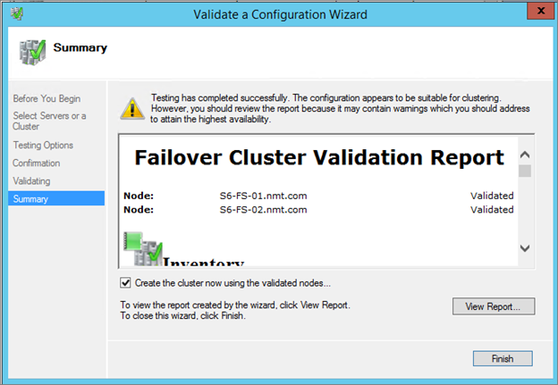

Step by Step–Two Node File Server Cluster (Part 01)
In this blog post, we will look at creating a Two Node File Server Cluster
Step 01 – Prepare your storage and Networks. In this demonstration I’m using Two Windows Server 2012 R2 Virtual Machines. I have two networks on each VM. One network for client communication and the other for cluster communication. I’m using iSCSI shared storage for this environment.
Step 02 – Next step would be for us to install Failover Cluster Features on both nodes. I’m using below mentioned Powershell Commends for installing Failover Cluster features locally and and also remotely.
- Installing Failover Cluster Features locally
Powershell : Install-WindowsFeature –Name Failover-clustering –IncludeManagementTools
- Installing Failover Cluster Features remotely

Step 03 – Next step would be for us to go ahead and validate this cluster to see if it meets all cluster requirements
Open failover Cluster Manager.
Right click on Failover Cluster Manager and select Create Cluster
Next on welcome wizard
Select servers which are going to be a part of this cluster
Cluster Validation Welcome Wizard
select all tests. it’s also possible for us to run specific tests if we need to when running Cluster Validation
Summary
Cluster validation running against the selected nodes
Validation completed and a report is presented to us with all details regarding the Cluster Validation

Next Post we will look at creating a cluster